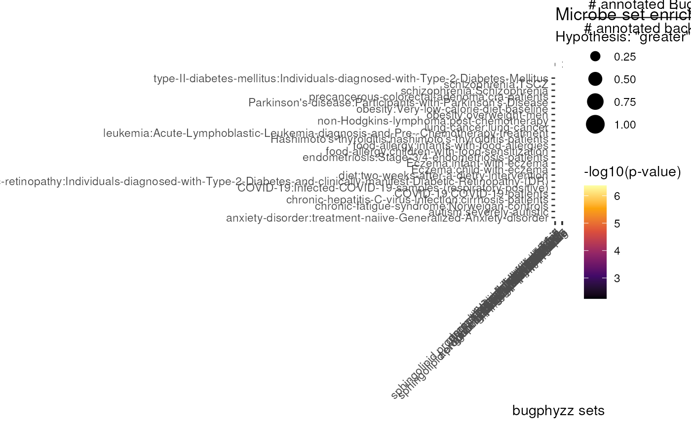

vignettes/articles/ora_fisher_typical.Rmd
ora_fisher_typical.Rmd
library(bugphyzzAnalyses)
library(bugphyzz)
library(purrr)
library(tidyr)
library(dplyr)
library(bugsigdbr)
library(taxPPro)
library(ggplot2)TypicalMicrobiomeSignatures will be used as reference. See https://github.com/waldronlab/TypicalMicrobiomeSignatures and https://zenodo.org/record/7544550
temp_dir <- paste0(tempdir(), '/TypicalMicrobiomeSignatures')
dir.create(temp_dir, showWarnings = FALSE)
doi <- "10.5281/zenodo.7544550"
zen4R::download_zenodo(doi = doi, path = temp_dir, quiet = TRUE)
zip_file <- list.files(temp_dir, full.names = TRUE)
base_dir <- sub('\\.zip', '', zip_file)
unzip(zip_file, exdir = base_dir, )
extracted_dir <- paste0(base_dir, '/', list.files(base_dir))
fnames <- grep(
'\\.csv', list.files(extracted_dir, full.names = TRUE), value = TRUE
)
tms <- map(fnames, read.csv)
names(tms) <- sub('^.*/matrix_(.*)\\.csv$', '\\1', fnames)
output <- vector('list', length(tms))
for (i in seq_along(output)) {
output[[i]] <- tms[[i]] |>
pivot_longer(
cols = ends_with('_prevalence'), names_to = 'body_site',
values_to = 'pravalence'
) |>
mutate(body_site = sub('_prevalence$', '', body_site)) |>
separate(
col = 'body_site', into = c('body_site', 'rank'), sep = '_'
) |>
rename(
taxid = NCBI, taxon_name = name
) |>
mutate(age_range = sub('^.*_', '', names(tms)[i]))
}
typical <- do.call(rbind, output)
typical$prevalence <- round(typical$pravalence, 2)
typical <- typical[typical$pravalence > 0.01,] # prevalence >= 1%
glimpse(typical, width = 50)
#> Rows: 3,387
#> Columns: 7
#> $ taxid <int> 1279, 1279, 1279, 1279, 1279,…
#> $ taxon_name <chr> "Staphylococcus", "Staphyloco…
#> $ body_site <chr> "skin", "vagina", "oralcavity…
#> $ rank <chr> "genus", "genus", "genus", "g…
#> $ pravalence <dbl> 0.98895028, 0.06315789, 0.039…
#> $ age_range <chr> "adult", "adult", "adult", "a…
#> $ prevalence <dbl> 0.99, 0.06, 0.04, 0.87, 0.02,…We’ll use the bugsigdbr package to import the main data.frame of signatures (microbe sets) from BugSigDB.
bsdb <- importBugSigDB()
id1 <- sub(".* ", "", bsdb$Study)
id2 <- sub(".* ", "", bsdb$Experiment)
id3 <- sub(".* ", "", bsdb$`Signature page name`)
bsdb$id <- paste0('bsdb:', id1, '/', id2, '/', id3)
bsdb <- relocate(bsdb, id)
head(as_tibble(bsdb))
#> # A tibble: 6 × 49
#> id Study Study…¹ PMID DOI URL Autho…² Title Journal Year Exper…³
#> <chr> <chr> <chr> <dbl> <chr> <chr> <chr> <chr> <chr> <dbl> <chr>
#> 1 bsdb:1/1… Stud… case-c… 2.80e7 10.1… NA Peters… The … Microb… 2016 Experi…
#> 2 bsdb:1/1… Stud… case-c… 2.80e7 10.1… NA Peters… The … Microb… 2016 Experi…
#> 3 bsdb:1/2… Stud… case-c… 2.80e7 10.1… NA Peters… The … Microb… 2016 Experi…
#> 4 bsdb:1/2… Stud… case-c… 2.80e7 10.1… NA Peters… The … Microb… 2016 Experi…
#> 5 bsdb:1/3… Stud… case-c… 2.80e7 10.1… NA Peters… The … Microb… 2016 Experi…
#> 6 bsdb:1/4… Stud… case-c… 2.80e7 10.1… NA Peters… The … Microb… 2016 Experi…
#> # … with 38 more variables: `Location of subjects` <chr>, `Host species` <chr>,
#> # `Body site` <chr>, `UBERON ID` <chr>, Condition <chr>, `EFO ID` <chr>,
#> # `Group 0 name` <chr>, `Group 1 name` <chr>, `Group 1 definition` <chr>,
#> # `Group 0 sample size` <dbl>, `Group 1 sample size` <dbl>,
#> # `Antibiotics exclusion` <chr>, `Sequencing type` <chr>,
#> # `16S variable region` <dbl>, `Sequencing platform` <chr>,
#> # `Statistical test` <chr>, `Significance threshold` <dbl>, …
bg_sigs_gn <- lapply(phys, function(x) {
bugphyzz::getSignatures(
df = x, tax.id.type = 'NCBI_ID', tax.level = 'genus', min.size = 5
)
})
bg_sigs_gn <- flatten(bg_sigs_gn)pH is the only numeric signature that I will use right now.
ph <- physiologies('optimal ph')[[1]]
ph <- preSteps(ph, tax.id.type = 'NCBI_ID')
prop_ph <- propagate(ph)Create some signatures for pH
## Some thresholds
acidic <- prop_ph$Attribute_value[prop_ph$Attribute_value <= 5]
neutral <- prop_ph$Attribute_value[prop_ph$Attribute_value > 5 & prop_ph$Attribute_value <= 7]
alkaline <- prop_ph$Attribute_value[prop_ph$Attribute_value > 7 & prop_ph$Attribute_value <= 9.75]
very_alkaline <- prop_ph$Attribute_value[prop_ph$Attribute_value > 9.75]
ph_sigs_gn <- vector('list', 4)
names(ph_sigs_gn)[1] <- paste0('bugphyzz:optimal ph|', 'acidic', '|', min(acidic), '-', max(acidic))
names(ph_sigs_gn)[2] <- paste0('bugphyzz:optimal ph|', 'neutral', '|', min(neutral), '-', max(neutral))
names(ph_sigs_gn)[3] <- paste0('bugphyzz:optimal ph|', 'alkaline', '|', min(alkaline), '-', max(alkaline))
names(ph_sigs_gn)[4] <- paste0('bugphyzz:optimal ph|', 'very alkaline', '|', min(very_alkaline), '-', max(very_alkaline))
ph_sigs_gn[[1]] <- prop_ph |>
filter(
Rank == 'genus',
Attribute_value %in% acidic
) |>
pull(NCBI_ID) |>
unique()
ph_sigs_gn[[2]] <- prop_ph |>
filter(
Rank == 'genus',
Attribute_value %in% neutral
) |>
pull(NCBI_ID) |>
unique()
ph_sigs_gn[[3]] <- prop_ph |>
filter(
Rank == 'genus',
Attribute_value %in% alkaline
) |>
pull(NCBI_ID) |>
unique()
ph_sigs_gn[[4]] <- prop_ph |>
filter(
Rank == 'genus',
Attribute_value %in% very_alkaline
) |>
pull(NCBI_ID) |>
unique()Combine signatures
bg_sigs_gn <- c(bg_sigs_gn, ph_sigs_gn)
lapply(bg_sigs_gn[1:5], head)
#> $`bugphyzz:aerophilicity|aerobic`
#> [1] "291967" "1078830" "53634" "522" "1000999" "50714"
#>
#> $`bugphyzz:aerophilicity|anaerobic`
#> [1] "1427378" "33951" "558418" "28186" "49894" "2373"
#>
#> $`bugphyzz:aerophilicity|facultatively anaerobic`
#> [1] "2147" "12914" "507753" "713" "458839" "1375"
#>
#> $`bugphyzz:aerophilicity|microaerophilic`
#> [1] "46352" "12960" "6" "191" "78328" "963"
#>
#> $`bugphyzz:aerophilicity|obligately aerobic`
#> [1] "442869" "434" "222" "33973" "110934" "160700"
bsdb_feces_gn <- bsdb |>
filter(`Body site` == 'feces', `Host species` == 'Homo sapiens') |>
bugsigdbr::getSignatures(
tax.id.type = 'ncbi', tax.level = 'genus', min.size = 5
)
lapply(bsdb_feces_gn[1:5], head)
#> $`bsdb:1/1/1_adenoma:conventional-adenoma-cases_vs_controls_UP`
#> [1] "1654" "1716" "1301" "162289" "189330" "33024"
#>
#> $`bsdb:1/4/1_adenoma:Proximal-conventional-adenoma-cases_vs_controls_UP`
#> [1] "1654" "1716" "1485" "836" "162289" "1301"
#>
#> $`bsdb:1/6/1_adenoma:Non-advanced-conventional-adenoma-cases_vs_controls_UP`
#> [1] "1654" "283168" "1301" "189330" "40544" "33024"
#>
#> $`bsdb:1/7/1_adenoma:advanced-conventional-adenoma-cases_vs_controls_UP`
#> [1] "1654" "1716" "836" "165779" "150022" "162289"
#>
#> $`bsdb:4/1/2_Hepatitis:HCV-stage-4-male-patients_vs_male-healthy-controls_DOWN`
#> [1] "375288" "1263" "574697" "1678" "53246" "39948"This step is accomplished by mergin the TypicalMicrobiomeSignatures with a BugSigDB microbe set.
typical_stool_gn <- typical |>
filter(body_site == 'stool', rank == 'genus') |>
pull(taxid) |>
unique()
reference_sigs_gn <- bsdb_feces_gn |>
lapply(function(x) unique(c(x, typical_stool_gn)))
lapply(reference_sigs_gn[1:5], head)
#> $`bsdb:1/1/1_adenoma:conventional-adenoma-cases_vs_controls_UP`
#> [1] "1654" "1716" "1301" "162289" "189330" "33024"
#>
#> $`bsdb:1/4/1_adenoma:Proximal-conventional-adenoma-cases_vs_controls_UP`
#> [1] "1654" "1716" "1485" "836" "162289" "1301"
#>
#> $`bsdb:1/6/1_adenoma:Non-advanced-conventional-adenoma-cases_vs_controls_UP`
#> [1] "1654" "283168" "1301" "189330" "40544" "33024"
#>
#> $`bsdb:1/7/1_adenoma:advanced-conventional-adenoma-cases_vs_controls_UP`
#> [1] "1654" "1716" "836" "165779" "150022" "162289"
#>
#> $`bsdb:4/1/2_Hepatitis:HCV-stage-4-male-patients_vs_male-healthy-controls_DOWN`
#> [1] "375288" "1263" "574697" "1678" "53246" "39948"
res_stool <- map2(
.x = bsdb_feces_gn,
.y = reference_sigs_gn,
.f = ~ microbeSetEnrichment(.x, .y, bg_sigs_gn)
) |>
bind_rows(.id = 'bugsigdb_sig')
res_stool <- res_stool |>
mutate(id = sub('_.*$', '', bugsigdb_sig)) |>
relocate(id) |>
rename(bp_sig = sig_name) |>
as_tibble() |>
left_join(as_tibble(bsdb), by = 'id')
res_stool_significant <- res_stool |>
filter(fdr < 0.05)
head(as_tibble(res_stool_significant))
#> # A tibble: 6 × 58
#> id bugsi…¹ bp_sig n_sig n_total p_value fdr odds_…² upper…³ lower…⁴
#> <chr> <chr> <chr> <int> <int> <dbl> <dbl> <dbl> <dbl> <dbl>
#> 1 bsdb:7/1… bsdb:7… bugph… 10 52 2.11e-3 0.0432 5.37 15.4 1.87
#> 2 bsdb:7/1… bsdb:7… bugph… 4 8 2.00e-3 0.0432 13.7 54.0 3.47
#> 3 bsdb:17/… bsdb:1… bugph… 3 5 6.54e-4 0.0268 41.1 226. 7.48
#> 4 bsdb:17/… bsdb:1… bugph… 9 41 8.57e-4 0.0351 6.78 20.0 2.30
#> 5 bsdb:19/… bsdb:1… bugph… 8 45 1.01e-4 0.00413 19.0 91.6 3.93
#> 6 bsdb:30/… bsdb:3… bugph… 3 5 1.22e-4 0.00501 91.6 602. 13.9
#> # … with 48 more variables: Study <chr>, `Study design` <chr>, PMID <dbl>,
#> # DOI <chr>, URL <chr>, `Authors list` <chr>, Title <chr>, Journal <chr>,
#> # Year <dbl>, Experiment <chr>, `Location of subjects` <chr>,
#> # `Host species` <chr>, `Body site` <chr>, `UBERON ID` <chr>,
#> # Condition <chr>, `EFO ID` <chr>, `Group 0 name` <chr>,
#> # `Group 1 name` <chr>, `Group 1 definition` <chr>,
#> # `Group 0 sample size` <dbl>, `Group 1 sample size` <dbl>, …
dim(res_stool_significant)
#> [1] 57 58
p <- res_stool_significant |>
mutate(
bugsigdb_sig = sub('^.*_(.*)_vs_.*$', '\\1', bugsigdb_sig),
bp_sig = sub('^bugphyzz:', '', bp_sig),
`Abundance in Group 1` = case_when(
`Abundance in Group 1` == 'increased' ~ 'Increased abundance in group 1',
`Abundance in Group 1` == 'decreased' ~ 'Decreased abundance in group 1',
TRUE ~ `Abundance in Group 1`
)
) |>
ggplot(aes(bp_sig, bugsigdb_sig)) +
geom_point(
aes(
color = -log10(p_value),
size = n_sig / n_total
)
) +
scale_color_viridis_c(option = 'B') +
scale_size(name = 'n_BugSigDB / n_reference') +
facet_wrap(~`Abundance in Group 1`, ncol = 2, scales = 'free_x') +
labs(
x = 'bugphyzz microbe sets (signatures)',
y = 'BugSigDB microbe sets (signatures) - Group 1 name',
title = 'Microbe Set Enrichment (ORA/Fisher, "hypotehsis greater") FDR < 0.05 - Stool/feces/gut - Genus'
) +
theme_bw() +
theme(axis.text.x = element_text(angle = 45, hjust = 1))
p